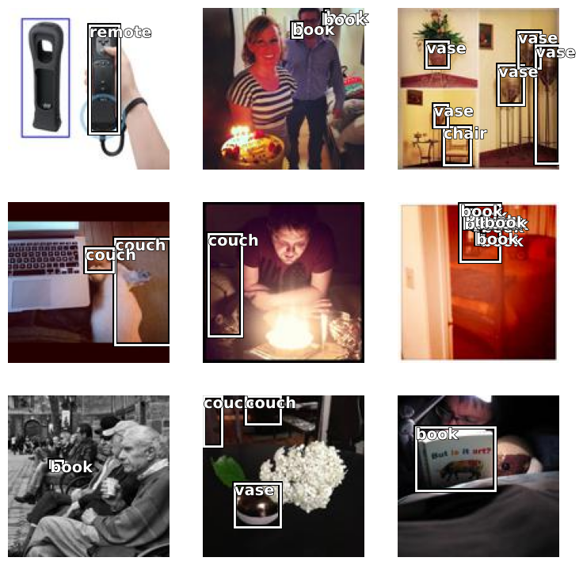

#TODO: passar para o "Fastai - Images"COCO Dataset
from fastai.vision.all import *coco_path = untar_data(URLs.COCO_TINY)
coco_imgs, coco_lbls = get_annotations(coco_path/"train.json")print(f"Filename: {coco_imgs[0]}")
print(f"BBoxes:")
display(coco_lbls[0][0])
print(f"Labels:")
display(coco_lbls[0][1])Filename: 000000542959.jpg
BBoxes:
Labels:[[32.52, 86.34, 41.050000000000004, 95.75],
[98.12, 110.52, 100.07000000000001, 114.59],
[91.28, 51.62, 95.23, 57.339999999999996],
[110.48, 110.82, 125.03, 126.03999999999999],
[96.63, 50.18, 115.3, 63.64],
[0.69, 111.73, 12.49, 124.79]]['chair', 'vase', 'vase', 'chair', 'chair', 'chair']mapping = dict(zip(coco_imgs, coco_lbls))mapping[coco_imgs[0]]([[32.52, 86.34, 41.050000000000004, 95.75],
[98.12, 110.52, 100.07000000000001, 114.59],
[91.28, 51.62, 95.23, 57.339999999999996],
[110.48, 110.82, 125.03, 126.03999999999999],
[96.63, 50.18, 115.3, 63.64],
[0.69, 111.73, 12.49, 124.79]],
['chair', 'vase', 'vase', 'chair', 'chair', 'chair'])coco = DataBlock(blocks=(ImageBlock, BBoxBlock, BBoxLblBlock),
get_items=get_image_files,
splitter=RandomSplitter(),
getters=[noop, lambda o: mapping[o.name][0], lambda o: mapping[o.name][1]],
n_inp=1,
item_tfms=Resize(128, method="pad"),
batch_tfms=[*aug_transforms(), Normalize.from_stats(*imagenet_stats)]
).dataloaders(coco_path/"train")dls.show_batch()
dls.vocab['#na#', 'book', 'chair', 'couch', 'remote', 'tv', 'vase']learn = vision_learner(dls, resnet18, metrics=error_rate)learn.model[-1]Sequential(
(0): AdaptiveConcatPool2d(
(ap): AdaptiveAvgPool2d(output_size=1)
(mp): AdaptiveMaxPool2d(output_size=1)
)
(1): fastai.layers.Flatten(full=False)
(2): BatchNorm1d(1024, eps=1e-05, momentum=0.1, affine=True, track_running_stats=True)
(3): Dropout(p=0.25, inplace=False)
(4): Linear(in_features=1024, out_features=512, bias=False)
(5): ReLU(inplace=True)
(6): BatchNorm1d(512, eps=1e-05, momentum=0.1, affine=True, track_running_stats=True)
(7): Dropout(p=0.5, inplace=False)
(8): Linear(in_features=512, out_features=8, bias=False)
)head_reg4 = nn.Sequential(
Flatten(),
nn.ReLU(),
nn.Dropout(0.5),
nn.Linear(8192,256),
nn.ReLU(),
nn.BatchNorm1d(256),
nn.Dropout(0.5),
nn.Linear(256,4+len(dls.vocab))
)
def detn_loss(preds, bb_t, c_t):
bb_i, c_i = preds[:, :4], preds[:, 4:]
bb_i = F.sigmoid(bb_i)*128 # image is 128 by 128 pixels
return F.l1_loss(bb_i, bb_t) + F.cross_entropy(c_i, c_t)*20
def detn_l1(preds, bb_t, _): # just the l1 part
bb_i = preds[:, :4]
bb_i = F.sigmoid(bb_i)*128
return F.l1_loss(bb_i, bb_t)
def detn_acc(preds, _, c_t):
c_i = preds[:, 4:]
return accuracy(c_i, c_t)
learn = vision_learner(dls, resnet18,
opt_func=Adam,
custom_head=head_reg4,
loss_func=detn_loss,
metrics=[detn_loss, detn_l1])learn.model[-1]Sequential(
(0): fastai.layers.Flatten(full=False)
(1): ReLU()
(2): Dropout(p=0.5, inplace=False)
(3): Linear(in_features=8192, out_features=256, bias=True)
(4): ReLU()
(5): BatchNorm1d(256, eps=1e-05, momentum=0.1, affine=True, track_running_stats=True)
(6): Dropout(p=0.5, inplace=False)
(7): Linear(in_features=256, out_features=11, bias=True)
)learn.lr_find()
0.00% [0/51 00:00<?]
0.00% [0/2 00:00<?]
/var/folders/_4/7wdh8p7x7fs7_2r_54cgjqbc0000gn/T/ipykernel_3813/2131526698.py:15: UserWarning: Using a target size (torch.Size([64, 14, 4])) that is different to the input size (torch.Size([64, 4])). This will likely lead to incorrect results due to broadcasting. Please ensure they have the same size.
return F.l1_loss(bb_i, bb_t) + F.cross_entropy(c_i, c_t)*20RuntimeError: The size of tensor a (64) must match the size of tensor b (14) at non-singleton dimension 1%debug> /Users/afonsomm/micromamba/envs/fastai/lib/python3.11/site-packages/torch/functional.py(76)broadcast_tensors()
74 if has_torch_function(tensors):
75 return handle_torch_function(broadcast_tensors, tensors, *tensors)
---> 76 return _VF.broadcast_tensors(tensors) # type: ignore[attr-defined]
77
78
> /Users/afonsomm/micromamba/envs/fastai/lib/python3.11/site-packages/torch/nn/functional.py(3308)l1_loss()
3306 reduction = _Reduction.legacy_get_string(size_average, reduce)
3307
-> 3308 expanded_input, expanded_target = torch.broadcast_tensors(input, target)
3309 return torch._C._nn.l1_loss(expanded_input, expanded_target, _Reduction.get_enum(reduction))
3310
> /var/folders/_4/7wdh8p7x7fs7_2r_54cgjqbc0000gn/T/ipykernel_3813/2131526698.py(15)detn_loss()
13 bb_i, c_i = preds[:, :4], preds[:, 4:]
14 bb_i = F.sigmoid(bb_i)*128 # image is 128 by 128 pixels
---> 15 return F.l1_loss(bb_i, bb_t) + F.cross_entropy(c_i, c_t)*20
16
17 def detn_l1(preds, bb_t, _): # just the l1 part
tensor([[ 2.5690, 126.5608, 12.2262, 0.8903],
[ 83.7336, 85.0326, 64.7407, 76.1727],
[ 64.6766, 111.4995, 19.7183, 69.8209],
[ 51.6426, 6.5306, 45.8705, 41.5545],
[114.8880, 121.6299, 90.3614, 69.2738],
[ 76.4227, 0.5352, 104.9488, 51.9038],
[ 86.1045, 104.7017, 9.7632, 107.6523],
[ 24.7586, 5.0934, 114.4475, 3.6471],
[ 76.4809, 76.1711, 39.5690, 115.7612],
[ 97.1152, 55.4078, 89.1299, 3.1915],
[ 4.7277, 21.2320, 98.1994, 7.6814],
[106.3805, 95.2271, 107.1801, 109.7481],
[ 73.9499, 80.7414, 101.5001, 91.9095],
[120.0499, 89.6627, 52.1363, 63.6621],
[ 2.1994, 20.2039, 69.5678, 70.9486],
[ 62.5240, 52.8380, 7.1984, 83.9535],
[ 61.6595, 48.1466, 86.4160, 73.2695],
[ 83.7826, 5.9919, 52.4612, 85.7278],
[ 25.4882, 81.8930, 69.5977, 97.0957],
[ 14.6698, 45.6408, 112.7496, 25.0879],
[ 17.0089, 5.2656, 65.1593, 24.2795],
[ 50.1866, 106.1552, 72.5513, 25.8515],
[ 38.9413, 54.6663, 102.0487, 55.6743],
[ 63.0977, 52.6145, 69.9570, 97.1862],
[ 5.2335, 102.5661, 119.4859, 126.2346],
[ 67.4074, 119.3863, 1.0921, 21.2790],
[ 82.7384, 65.5412, 61.8402, 61.6468],
[ 84.0641, 102.5530, 112.6653, 3.6961],
[ 6.1140, 126.2252, 4.4387, 98.7234],
[100.7587, 47.7164, 81.9035, 61.7866],
[ 93.2667, 29.4638, 99.8524, 60.9930],
[117.8148, 71.9431, 122.1499, 103.5465],
[ 0.8648, 96.2872, 119.4808, 62.8172],
[101.3584, 28.3785, 29.9200, 80.8259],
[ 1.3303, 53.7547, 17.4334, 0.5995],
[106.7720, 14.8255, 118.5083, 121.8114],
[ 0.6933, 54.9084, 91.4516, 127.8106],
[ 57.3228, 50.6803, 28.0623, 69.6143],
[ 69.0974, 81.3078, 69.6401, 4.7206],
[119.5988, 85.2019, 32.3085, 24.8179],
[124.4477, 125.7865, 100.4906, 53.0670],
[ 39.2794, 113.9442, 81.7345, 98.8729],
[113.6270, 92.7800, 42.3132, 47.6082],
[ 45.6575, 0.9164, 37.6602, 24.0864],
[ 95.2040, 25.4041, 47.0752, 31.9555],
[ 19.4229, 100.8608, 110.0410, 77.9709],
[108.2175, 31.4542, 16.0986, 47.5598],
[ 94.8908, 105.5095, 49.4364, 32.3753],
[ 65.0375, 52.9716, 102.9329, 114.0281],
[ 79.3414, 108.1584, 39.1219, 7.6808],
[ 16.5633, 49.6484, 74.7018, 80.9118],
[123.2854, 51.6942, 121.8760, 3.6957],
[ 73.0160, 22.4831, 64.9737, 22.4438],
[ 3.2380, 13.3611, 15.8094, 119.5057],
[ 14.8663, 116.4545, 80.6096, 127.6890],
[ 71.6435, 68.4526, 85.3988, 90.7951],
[ 62.7794, 0.4504, 122.7557, 7.1965],
[ 19.1332, 72.7924, 97.7015, 18.2696],
[ 72.3958, 96.2822, 125.9943, 114.8908],
[ 87.1134, 126.3648, 114.0802, 118.0417],
[100.4024, 67.3782, 21.1505, 30.8381],
[ 21.2348, 75.0129, 42.6298, 111.5129],
[ 20.0356, 55.2211, 112.5246, 94.5004],
[ 23.9963, 104.7157, 118.9034, 109.5660]], device='mps:0',
grad_fn=<MulBackward0>)
*** NameError: name 'bb_ishape' is not defined
torch.Size([64, 4])
torch.Size([64, 14, 4])ipdb> u
ipdb> u
ipdb> p bb_i
ipdb> p bb_ishape
ipdb> p bb_i.shape
ipdb> p bb_t.shapeChromosome Karyotype Dataset
- https://www.kaggle.com/datasets/aliabedimadiseh/chromosome-image-dataset-karyotype/data
import osos.listdir("./data")['weight',
'single_chromosomes_object',
'.DS_Store',
'diff_image.txt',
'train.txt',
'structural_abnormalities.csv',
'normal.csv',
'24_chromosomes_object',
'Readme.txt',
'test.txt',
'number_abnormalities.csv']!pip install lxmlRequirement already satisfied: lxml in /Users/afonsomm/micromamba/envs/fastai/lib/python3.11/site-packages (5.1.0)def get_labels(xml_path):
return pd.read_xml(xml_path, xpath="/annotation/object")["name"]
def get_bboxs(xml_path):
return pd.read_xml(xml_path, xpath="/annotation/object/bndbox")labels = get_labels("./data/24_chromosomes_object/annotations/103064.xml")
bboxs = get_bboxs("./data/24_chromosomes_object/annotations/103064.xml")display(labels.head())
display(bboxs.head())0 A1
1 A1
2 A2
3 A2
4 A3
Name: name, dtype: object| xmin | ymin | xmax | ymax | |
|---|---|---|---|---|
| 0 | 237 | 274 | 303 | 393 |
| 1 | 91 | 205 | 200 | 302 |
| 2 | 378 | 214 | 464 | 281 |
| 3 | 144 | 313 | 205 | 419 |
| 4 | 169 | 248 | 243 | 322 |